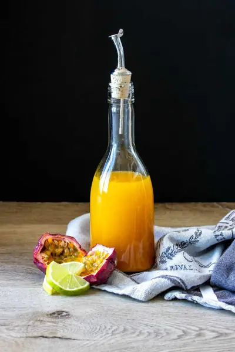

Passion Fruit Syrup Recipe

Ingredients
- 1½ cups water
- 2-4 tablespoons maple syrup (, can use agave nectar or honey too (see note)
- 1¼ cup passion fruit pulp with seeds (, about 14-16 average sized ripe passion fruit)
- ½ teaspoon turmeric
- dash black pepper
- 1-3 tablespoons Mezcal (, optional for some smokiness (I used 2)
Steps
- Add the water and sweetener to a pot. Bring to a boil, about 5 minutes. Boil over medium heat an additional 5 minutes.
- Meanwhile, clean out the pulp from the passion fruit.
- Remove from heat and add the pulp, turmeric and pepper. Mix around to incorporate.
- Allow to steep for 2-3 hours so the flavor gets infused.
- Strain over a mesh sieve into a glass jar, squeezing out the juice as you go. I save the pulp and seeds and freeze them into ice cubes to use in smoothies.
- Save and use with cocktails, over ice cream or mixed with water as a juice!
Recipe by Anjali Shah, from The Picky Eater. Saved here for personal use; the original has the full notes, tips and photos. Open original